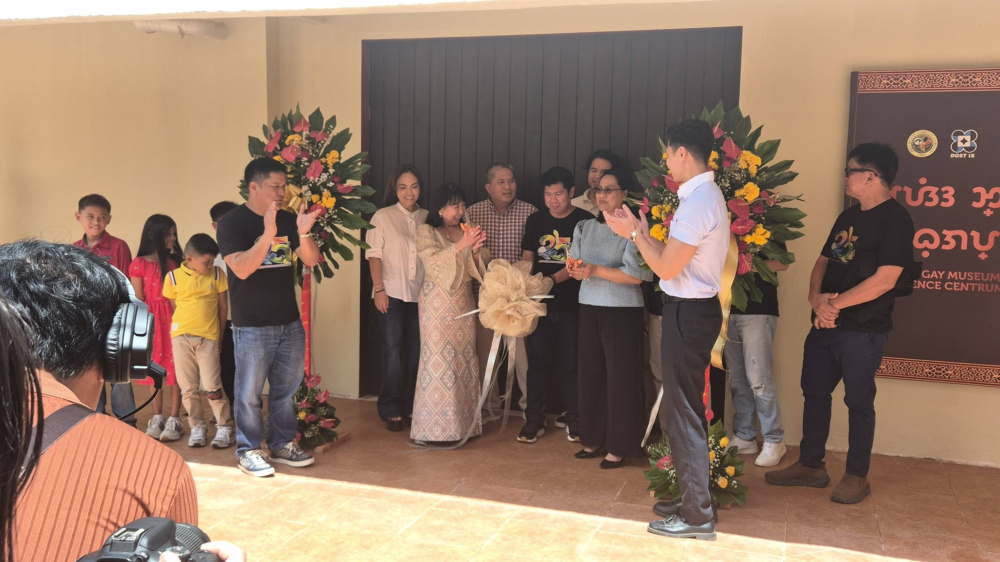
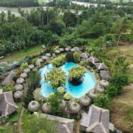

Overview
Cultural tourism allows visitors to explore and experience the traditions, history, art, and lifestyles of different communities. It provides insights into heritage, festivals, crafts, and local customs.
Tourists can participate in traditional ceremonies, visit museums, watch performances, and enjoy local culinary traditions, fostering cultural understanding and appreciation.
Popular Cultural Destinations
Zamboanga Sibugay Provincial Capitol

The Zamboanga Sibugay Provincial Capitol, located in Ipil, serves as the main government center of the province and symbolizes its political and cultural identity. It is not only an administrative building but also a venue for official ceremonies, public gatherings, and provincial events that showcase local traditions and unity.
Zambo Sibugay Museum

Zambo Sibugay Museum offers exhibitions on local history, artifacts, and influential figures. Tourists gain knowledge about the region's past and its cultural significance.
R.T. Lim Municipal Park

R.T. Lim Municipal Park is a public recreational area in Zamboanga Sibugay that provides space for relaxation, community gatherings, and local events. It reflects the town’s community life and serves as a local tourism spot for visitors and residents.